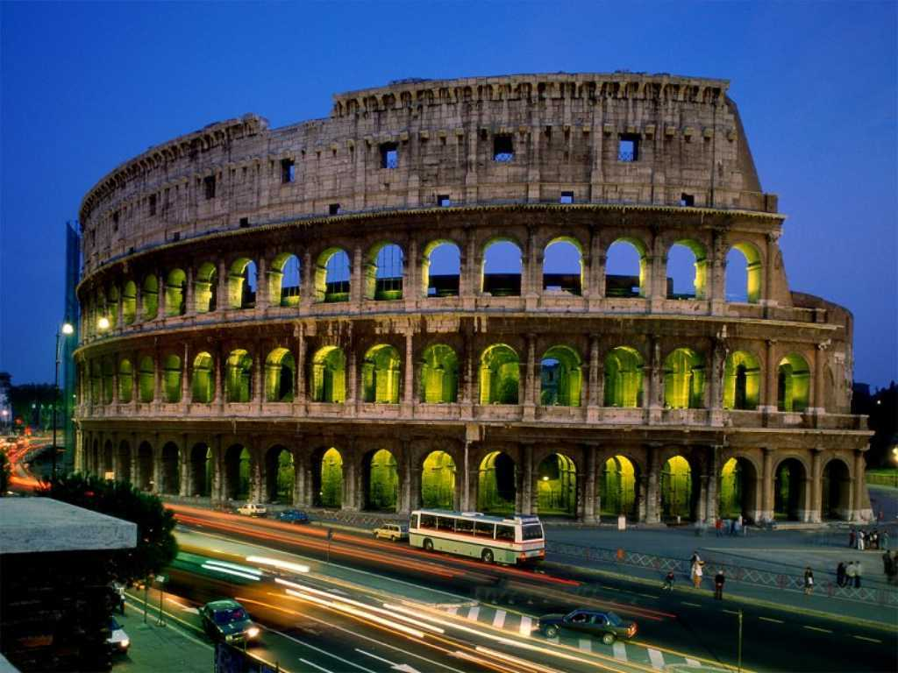
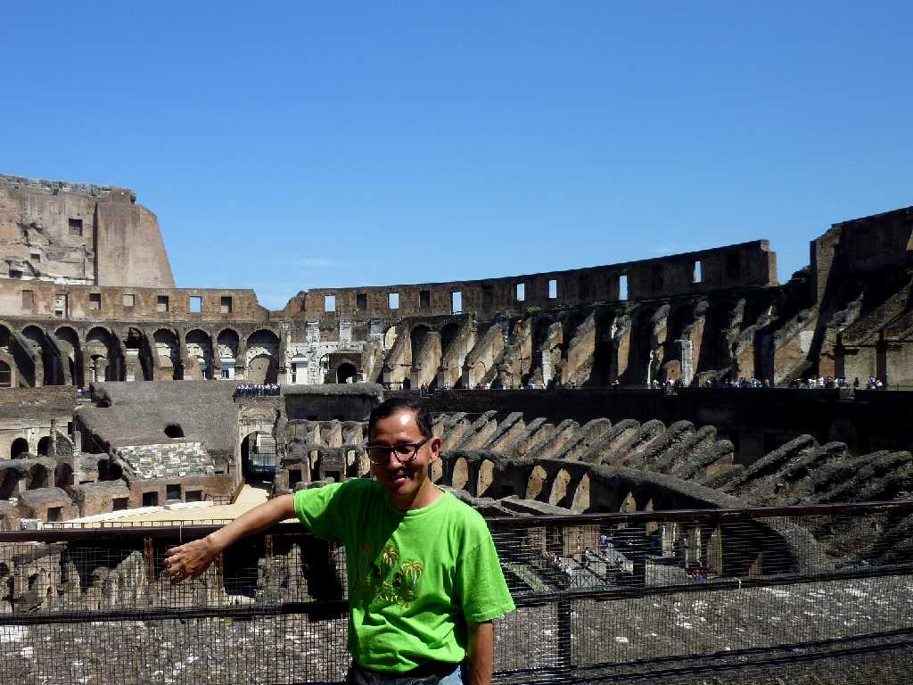
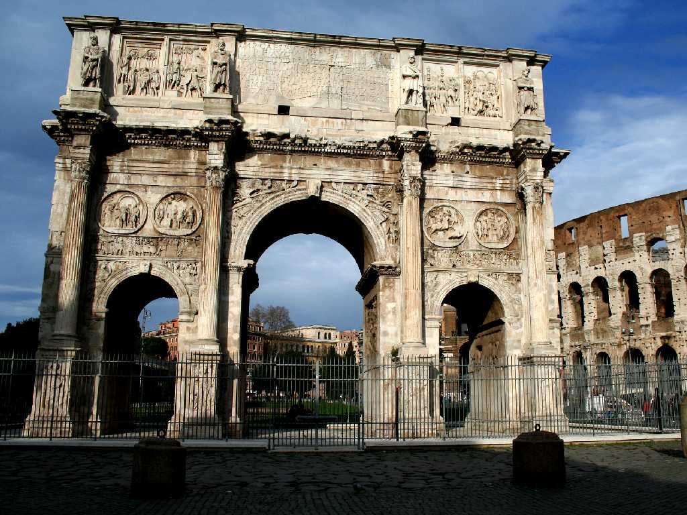

Coliseum Roma
ローマの顔コロセウム 高さ５０ｍの円形競技場で５万人の観客を収容できた

June 24 2011 Coliseum

Arco di Costantino
コンスタンティヌスの凱旋門 は皇帝マクセンティウスとの戦いに勝利し西ローマ帝国唯一の皇帝となったことを記念して３１２年に創られたが近年２００年前の装飾が発見されたため２世紀頃創られた凱旋門を改築したものとも考えられている